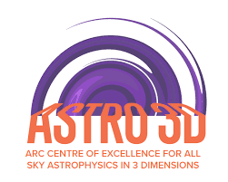
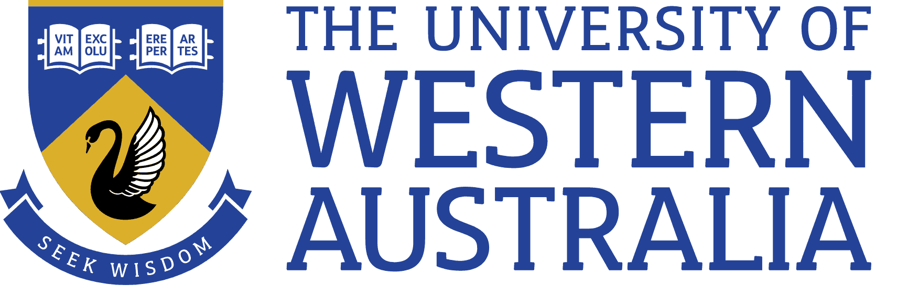
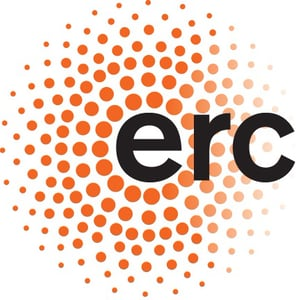

| Home | Registration | Programme | Techinical Requirements | Directions | SOC & LOC | Credits |
Schwarzschild dynamical models, while successfully used for numerous scientific projects over the last 15 years, were only recently used to model a large number of galaxies (first used for ~300 galaxies from the CALIFA survey, ~150 from the MaNGA survey and ~160 from the SAMI surveys). With new data coming from state-of-the-art IFS surveys such as MAGPI and HECTOR, being able to exploit all the information we can derive from good quality data is crucial. DYNAMITE (DYnamics, Age and Metallicity Indicators Tracing Evolution) is a next generation implementation of the Schwarzschild technique for orbit-based dynamical modelling of stellar systems. DYNAMITE’s great versatility makes it the perfect tool for a vast variety of projects and astronomical fields. This workshop will provide the tools to enable scientists to use such a powerful technique in their research, maximising their research outputs.
DYNAMITE Workshop is being organized by Giulia Santucci, Sabine Thater, etc. The organizers are grateful for support from the following sponsors:
|  |  |  |